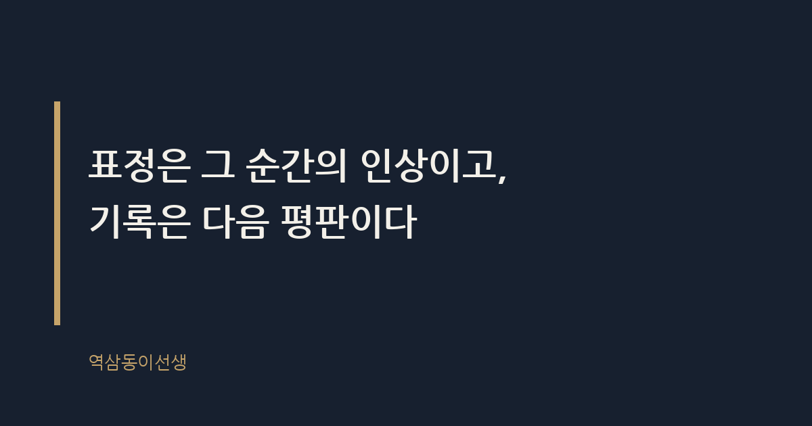
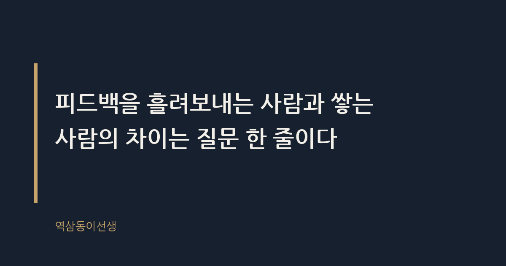

주제 피드백을 받을 때 표정 관리보다 중요한 것 (evergreen / office)
제목 후보
메타 설명 피드백 받을 때 표정 관리에 신경 쓰다 정작 중요한 걸 놓친다. 25년 차가 본 피드백 잘 받는 사람의 진짜 공통점.
라벨 피드백, 직장생활, 업무스킬, 피드백받는법, 리더십, 자기계발, 피드백표정관리, 상사피드백대처법, 성과평가피드백, 신입사원피드백
실용 자산 예시 문장 모음 — 피드백을 받는 순간 실제로 쓸 수 있는 말을 찾는 도구형 검색 의도가 강해 상황별 예시 문장을 넣었다
발행 전 팩트체크
이미지 (Blogger 편집기에 드래그해 넣으세요)
도입부 사진 · ⓒ Pexels / Pexels


지난 분기 성과 리뷰 시즌, 작은 회의실에서 후배 둘을 연달아 만났다. 한 친구는 내가 지적하는 내내 눈 한번 깜빡이지 않았다. 표정 변화도 없고, "네, 알겠습니다"도 타이밍 좋게 또박또박 나왔다. 나가는 뒷모습까지 반듯했다. 다른 친구는 얼굴이 벌겋게 달아오르더니 눈가가 촉촉해졌다. 목소리도 살짝 떨렸다. 그런데 그 친구가 마지막에 한 말이 달랐다. "그러면 다음 프로젝트에서는 어떤 부분을 먼저 고치면 될까요?" 그러고는 수첩을 꺼내 받아 적었다.
석 달 뒤, 완벽하게 표정을 관리했던 친구는 똑같은 실수를 반복했다. 눈물을 보였던 친구는 지적받은 지점을 정확히 고쳐서 돌아왔다. 그날 나는 표정 관리가 피드백을 잘 받는 것과 아무 상관이 없다는 걸 다시 확인했다.
결론부터 말하면, 피드백을 받을 때 중요한 건 표정이 아니라 '그 다음 24시간 동안 무엇을 하느냐'다. 피드백이란 상대가 관찰한 행동과 그로 인한 결과를 전달하는 정보다. 정보는 받은 순간이 아니라 처리하는 과정에서 가치가 생긴다. 표정 관리는 그 자리를 무사히 넘기기 위한 생존 기술일 뿐이고, 평판을 만드는 건 피드백 이후의 질문과 기록과 행동 변화다.
많은 사람이 피드백 자리를 '시험'으로 착각한다. 시험이라면 당연히 표정이라는 답안지를 잘 써야 한다. 하지만 피드백 자리는 시험이 아니라 정보 전달 창구다. 창구에서 중요한 건 인상이 아니라 정보를 얼마나 정확히 챙겨가느냐다.
표정 관리에 집착하는 이유는 피드백을 '평가'가 아니라 '공격'으로 받아들이기 때문이다. 공격을 받으면 본능적으로 방어 자세를 취한다. 가장 손쉬운 방어는 표정을 굳히고 "괜찮습니다"를 반복하는 것이다. 이 반응은 즉각적인 체면은 지켜주지만, 정보를 흡수하는 데는 방해가 된다. 머릿속은 '지금 내 표정이 어때 보일까'를 계산하느라 바쁘고, 정작 상대가 한 말의 내용은 절반도 못 듣는다.
25년 동안 지켜본 바로는, 표정을 완벽하게 관리하는 사람일수록 피드백 내용을 복기하지 못하는 경우가 많았다. 회의가 끝나고 "아까 제가 뭘 고치면 된다고 하셨죠" 하고 되묻는 사람 열에 아홉은 그 자리에서 가장 침착해 보였던 사람이었다. 침착함과 흡수력은 다른 능력이다.
작년 가을, 다른 팀 팀장에게 들은 얘기도 비슷했다. 신입 하나가 피드백 자리에서 늘 미소를 잃지 않아서 처음엔 마음이 단단한 친구라고 생각했다고 한다. 그런데 몇 번을 겪고 나니 그 미소가 '빨리 이 시간이 지나가길 바라는 신호'라는 걸 알게 됐다. 지적한 내용을 다음 회의에서 다시 꺼내면 늘 처음 듣는 표정을 지었다. 웃는 얼굴 뒤에서 정보가 통째로 증발하고 있었던 셈이다.
피드백을 주는 입장이 되어 보면 묘하게 다른 풍경이 보인다. 상대의 표정이 아니라 그 사람의 손이 먼저 눈에 들어온다. 손이 수첩이나 노트북으로 가는지, 아니면 가만히 무릎 위에 놓여 있는지. 받아 적는 사람은 설령 목소리가 떨려도 '이 피드백을 쓸 생각이 있구나'라는 신호를 준다. 반대로 표정만 반듯하고 손이 움직이지 않으면, 아무리 침착해 보여도 속으로는 '이 시간이 빨리 끝나길' 바라고 있다는 게 느껴진다.
신기한 건, 피드백을 주는 사람도 상대의 반응에 따라 말의 밀도를 조절한다는 점이다. 받아 적는 사람에게는 구체적인 사례와 숫자까지 꺼내 설명하게 된다. 어차피 흘려보낼 것 같은 사람에게는 핵심 한 문장만 던지고 자리를 마무리한다. 결국 표정을 관리할수록 더 알맹이 없는 피드백만 받고 끝나는 역설이 생긴다.
피드백 자리에서 쓸 수 있는 말은 생각보다 간단하다. 아래는 상황별로 자주 쓰는 표현과, 반대로 피해야 할 표현을 정리한 것이다.
표정 관리가 역효과를 내는 순간도 있다. 몇 해 전, 중요한 캠페인이 엎어진 뒤 담당자를 불러 원인을 짚은 적이 있다. 그 친구는 끝까지 담담했다. 문제는 그 다음이었다. 같은 실수의 조짐이 다른 프로젝트에서 또 보였을 때, 나는 '그때 분명히 짚었는데 왜 또'라는 생각이 먼저 들었다. 표정이 너무 멀쩡했던 탓에, 그 피드백이 제대로 전달됐는지 확인할 방법이 없었던 거다. 결국 그 뒤로는 중요한 지적을 할 때마다 서면으로 한 번 더 확인하는 수고를 들여야 했다.
표정을 지나치게 관리하면 상대에게 '내가 이걸 받아들였다'는 신호 자체가 전달되지 않는다. 신호가 없으면 피드백을 준 사람은 불안해지고, 그 불안은 다음번에 더 날카로운 지적이나 더 깐깐한 확인으로 돌아온다. 표정 관리가 당장은 체면을 지켜주지만, 길게 보면 오히려 신뢰를 깎아먹는 셈이다.
피드백 자리가 끝난 직후의 24시간은 생각보다 많은 걸 결정한다. 자리에서 나오자마자 하는 행동을 보면 그 사람이 피드백을 어떻게 처리할지 짐작이 간다. 어떤 사람은 회의실 문을 닫자마자 표정을 풀고 동료에게 "아 진짜 떨렸다"며 감정을 털어낸다. 거기서 끝이다. 그 피드백은 감정의 영역에만 머물다 사라진다.
반면 쌓는 사람은 회의실을 나오자마자 휴대폰 메모장을 연다. 지적받은 내용을 세 줄 이내로 요약하고, 모르는 부분이 있으면 그날 퇴근 전에 담당자에게 짧은 메시지를 보낸다. "아까 말씀하신 부분, 제가 이해한 게 맞는지 확인하고 싶어서요." 이 메시지 하나가 피드백을 '그 순간의 감정'에서 '다음 행동의 재료'로 바꿔놓는다. 감정은 24시간이 지나면 흐려지지만, 메모는 그대로 남는다.
실제로 메모를 남기는 습관이 있는 후배는 다음 보고 자리에서 늘 한 문장을 먼저 꺼낸다. "지난번 말씀하신 대로 이 부분은 이렇게 수정했습니다." 이 한마디로 피드백을 준 사람은 자신의 말이 허공으로 사라지지 않았다는 걸 확인한다. 신뢰는 거창한 성과보다 이런 작은 확인에서 쌓인다.
흥미로운 건, 쌓는 사람일수록 피드백을 기다리지 않고 먼저 구한다는 점이다. 보고서를 제출하기 전에 "이 방향 맞는지 한번 봐주실 수 있나요"라고 먼저 묻는 사람과, 제출한 뒤 지적을 당하고서야 반응하는 사람은 피드백을 대하는 태도 자체가 다르다. 먼저 구하는 사람은 피드백을 '평가'가 아니라 '수정 기회'로 쓰고 있는 것이다. 이 차이는 표정 관리와는 아예 다른 차원의 문제다.
신입 시절, 선배가 작성한 기획안 초안을 가져와 "여기서 제일 약한 부분이 어디일까요"라고 먼저 물어본 적이 있다. 그 질문 하나로 지적받을 포인트를 절반 가까이 줄였다. 피드백을 받는 능력이 좋은 사람은 사실 피드백을 '잘 버티는' 사람이 아니라 '잘 요청하는' 사람이었다.
피드백 루프란 피드백을 받은 뒤 질문하고, 기록하고, 다시 확인하는 과정까지 이어지는 흐름을 말한다. 표정 관리는 이 루프의 시작 지점에서만 작동하고 그 이후로는 아무 역할이 없다. 루프를 완성하는 사람은 세 가지를 꼭 한다. 첫째, 자리가 끝나기 전에 모호한 부분을 한 번은 되묻는다. 둘째, 그날 안에 핵심 내용을 한두 줄로 메모한다. 셋째, 다음에 비슷한 상황이 오면 그 메모를 꺼내 확인한다.
이 세 단계는 거창한 스킬이 아니다. 그런데 실제로 이걸 지키는 사람은 많지 않다. 왜냐하면 표정 관리에 에너지를 다 쓰고 나면 되묻고 기록할 여력이 안 남기 때문이다. 결국 표정에 쓰는 에너지를 줄여야 루프를 완성할 에너지가 생긴다. 그래서 표정보다 중요한 건 표정에 힘을 덜 빼는 연습이다.
씁쓸하면서도 꽤 분명한 사실이 있다. 사람들은 피드백 받는 그 순간의 표정을 꽤 오래 기억하긴 하지만, 승진 심사나 중요한 프로젝트 배정 앞에서는 그 표정을 떠올리지 않는다. 떠올리는 건 "그 친구가 지난번에 지적받은 걸 고쳐왔는가"다. 표정은 그 순간의 인상이고, 기록은 다음 평판이다. 피드백을 흘려보내는 사람과 쌓는 사람의 차이는 질문 한 줄이다.
그날 눈물을 보였던 후배는 지금 다른 팀의 과장이 됐다. 완벽하게 침착했던 친구는 여전히 비슷한 지적을 받는다. 표정은 둘 중 누구도 기억하지 못한다. 결국 남는 건 그 다음에 뭘 했느냐뿐이다.
Q. 피드백받을 때 표정관리에만 신경 쓰다가 정작 내용을 놓친 적, 저만 있는 건 아니죠?